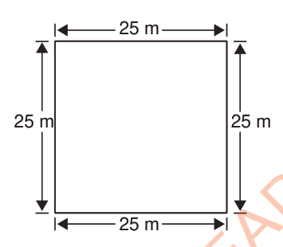

Example 1
A square flower garden is 25 m long. Find its perimeter.
Solution
Length of the garden = 25 m.

Perimeter of the garden = 25 m + 25 m + 25 m + 25 m
= 100 m
Therefore, the perimeter of the flower garden is 100 metres.